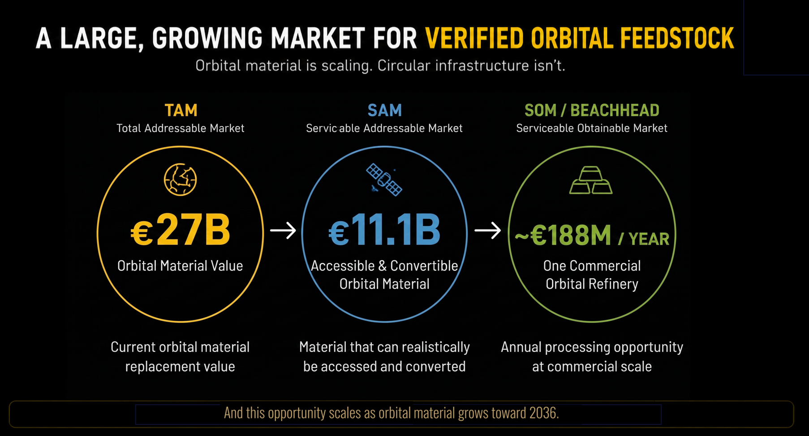
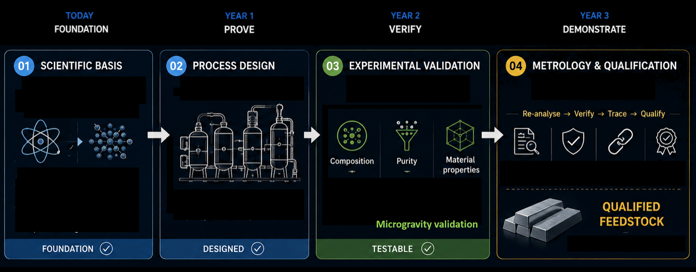

The mission
Move space from a one-way supply chain to a material system that can recover value, support new missions and operate for longer.
The next space economy will need more than new launches. It will need the ability to keep material in orbit, recover value from existing assets and turn orbital infrastructure into a long-term, serviceable resource.
Dissecting one mission
The opportunity becomes visible when we follow one space asset, not when we list disconnected technologies.
From orbital resources to tomorrow’s infrastructure
The complete value chain: the material already in orbit, the service required to access it, the refining step, and the next generation of space hardware.

How the orbital mass model is built
The model starts from a 2026 baseline, applies the stated 30% CAGR to annual additions, and then separates existing stock from newly added material.
M(t) = M(2030) × (1 + r)t-2030where
r = 0.30, t ∈ [2026, 2036], and the 2030 annual addition is set to 9,100 t. The resulting annual additions are summed to obtain cumulative new mass.Existing human-made material in orbit in the 2026 baseline assessment.5
Annual orbital additions are projected with the exponential growth assumption used in the scenario.
Projected annual addition in 2030; cumulative new material reaches 28,812.79 t by 2030.
Projected annual addition in 2036; cumulative new material reaches 179,716.63 t from 2026 to 2036.
2036 projected stock = 16,200 t baseline + 179,716.63 t cumulative additions.
Using a rounded 420 t per ISS, the projected 2036 stock of 195,916.63 t equates to approximately 466.5 space stations.
| Year | Annual addition | Cumulative new mass | What the scenario represents |
|---|---|---|---|
| 2026 | 3,186.16 t | 3,186.16 t | Baseline year |
| 2027 | 4,142.01 t | 7,328.17 t | 30% annual growth applied |
| 2028 | 5,384.62 t | 12,712.79 t | 30% annual growth applied |
| 2029 | 7,000.00 t | 19,712.79 t | 30% annual growth applied |
| 2030 | 9,100.00 t | 28,812.79 t | Target annual addition in the model |
| 2031 | 11,830.00 t | 40,642.79 t | 30% annual growth applied |
| 2032 | 15,379.00 t | 56,021.79 t | 30% annual growth applied |
| 2033 | 19,992.70 t | 76,014.49 t | 30% annual growth applied |
| 2034 | 25,990.51 t | 102,005.00 t | 30% annual growth applied |
| 2035 | 33,787.66 t | 135,792.67 t | 30% annual growth applied |
| 2036 | 43,923.96 t | 179,716.63 t | End of projection window |
The model’s headline 2036 figure is therefore 195,916.63 t: the projected cumulative additions of 179,716.63 t plus the 2026 baseline stock of 16,200 t.
From mass to recoverable feedstock
The model distinguishes total human-made orbital material from the smaller fraction that could become recoverable industrial feedstock. Recovery depends on access, composition, contamination, processing loss, quality verification and whether the material can be routed into a real ISAM application.
| Reference asset | Mass assumption | 2036 equivalent |
|---|---|---|
| NASA-standard ISS | 419.725 t | 466.8 stations |
| ISS rounded benchmark | 420 t | 466.5 stations |
| ISS high-load benchmark | 450 t | 435.4 stations |
| SpaceX Starship propellant depot | 1,300 t | 150.7 depots |
| NASA GRC / Bienhoff depot | 335 t | 584.8 depots |
| Orbital Reef | 330 t | 593.7 stations |
| Axiom Station | 100 t | 1,959.2 stations |
| Starlab | 40 t | 4,897.9 platforms |
| UK/ESA CASSIOPeiA 2 GW SBSP | 2,000 t | 98.0 units |

Market Sizing: A Capacity-Driven Approach
Building the market size bottom-up from physical orbital material constraints, rather than top-down from the broader space economy.

Current Orbital Material Value: Based on approximately 16,200 tonnes of material in orbit.5 This represents the replacement launch value (~€1.667M/tonne or ~€1,667/kg) to put equivalent mass into orbit from Earth.6 It does not include the intrinsic raw material value or the potential cost of removing the objects.
Accessible & Convertible Material: This applies two physical constraints to TAM. First, orbital accessibility. Based on orbital environment remediation modeling, the mass-weighted accessibility range is 65% to 78%.1 We model the 71.5% midpoint. Second, net feedstock yield. The material conversion rate from a retired spacecraft into usable feedstock ranges from 50% to 65%.2 We model the 57.5% midpoint. Therefore, 16,200 tonnes × 71.5% × 57.5% yields approximately 6,661 tonnes of serviceable material. Applying the TAM unit value results in €11.1 billion.
One Commercial Orbital Refinery: This is a capacity-driven baseline. Market reports and conceptual design studies indicate a commercial-scale orbital refining throughput of 100 to 300 tonnes per year.3 We assume a 200-tonne facility. Factoring in limitations like eclipse duty cycles, the estimated microgravity operating uptime is 45% to 68%.4 Using the 56.5% midpoint, the effective processing capacity is 113 tonnes per year. Applying the €1.667M per tonne valuation yields approximately €188M per year for a single initial facility.
From orbital debris management
to orbital material supply.
Recycling is not enough. A circular orbital economy needs recovery, separation, selective refining and quality verification so that recovered metal can become a reliable input to future hardware.

A circular orbital material loop
The proposed system connects end-of-life assets with future in-space manufacturing rather than treating each spacecraft as a one-way mission.

Why now?
Putting mass into orbit is expensive. Keeping that mass useful can improve resilience, reduce repeated replacement and create a new supply-chain layer.

Orbital material value
The assessment models approximately €870 million of metal-material value in the 2026 baseline, increasing to approximately €2.82 billion by 2030 and €10.5 billion by 2036. This is material value already associated with the orbital mass, not yet the value of the services that could recover and transform it.7
Launch cost is only the beginning
Reference calculations use approximately $54,500/kg for heavy launch to LEO and approximately $1,400/kg for a commercial launch case.6 The wider estimate places the cost of putting the existing material into orbit at approximately €27 billion. The larger opportunity is to reduce repeated launch, replacement and integration across the full system life cycle.
A growing operational challenge
Mass growth increases both the resource available for recovery and the complexity of the orbital environment. The projection indicates approximately 9,100 tonnes added per year by 2030 and approximately 24,000 tonnes per year by 2036. A material loop must therefore be designed around safe access, controlled processing and responsible end-of-life handling.
Designed for ISAM
In-space servicing, assembly and manufacturing require components and feedstocks that can be accessed, exchanged, verified and reused. Recovery and refining provide the missing material step in that service-oriented architecture.
One idea, several markets
The material loop connects debris mitigation, in-space servicing and future manufacturing into one infrastructure opportunity.
In-space servicing
Recovered and verified material can support repair, replacement, assembly and upgrade, reducing dependence on a new launch for every capability change.
In-space manufacturing
Refined feedstock can become an input for future structures, shielding, interfaces and multifunctional hardware made where it is needed.
Orbital resilience
Safe recovery and material stewardship reduce the long-term burden of abandoned assets while making valuable infrastructure easier to maintain.
Design for circularity
Serviceability, modularity, demisability and recoverable materials must be considered together from the first design decision.
Route to Demonstration
A phased approach to building the foundation, proving the process, and demonstrating qualified feedstock production.

References
Academic and industry sources supporting the orbital material and capacity models.
- Liou, J.-C. (2011). "An active debris removal parametric study for LEO environment remediation." Advances in Space Research, 47(11), 1865-1876.
- Lenkart, M., & Biller, S. (2026). "Space debris material sourcing for in-space manufacturing: a quantitative evaluation framework." Frontiers in Space Technologies, 6.
- DataIntelo Market Research. (2023). "In-Situ Resource Utilization (ISRU) Market Report."
- Per Aspera. (2024). "Realities of Space-Based Compute and Manufacturing: Managing LEO Eclipse Duty Cycles." Per Aspera Space Industry Analysis.
- European Space Agency (ESA). (2026). "Space Environment Report." Space Debris Office.
- SparkCo. (2025). "Space Economy Disruption Playbook 2025-2035: Bold Predictions."
- NASA Orbital Debris Program Office. (2025). "Orbital Debris Engineering Model (ORDEM) 3.2."
Turning the last 60 years of waste
into the next 60 years of materials.
Help turn the material loop into a real system.
We are looking for collaborators across spacecraft operations, robotics, metallurgy, ISAM, materials qualification, policy and space economics. The question is not only whether orbital material can be recovered, it is how to make recovery useful, safe and commercially repeatable.